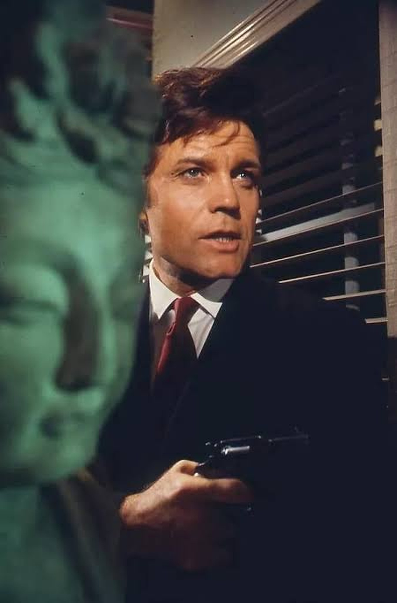
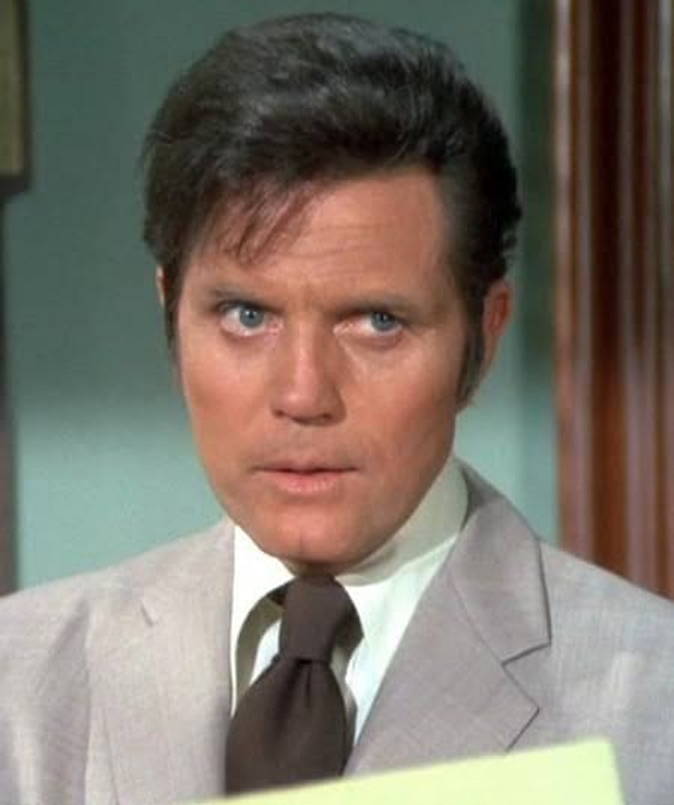
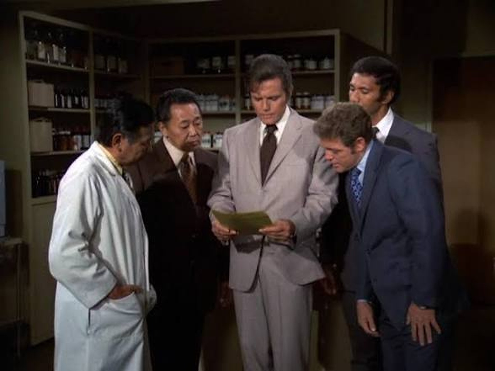

J'étais très jeune. Dans le salon, la télévision était sur Antenne 2.
Mon grand-père était assis dans son fauteuil orange, à côté de la fenêtre. C'est là que j'ai découvert cette série, à ses côtés.
Je ne me souviens plus des intrigues. Je me souviens du générique : la caméra posée à l'arrière de la moto, qui filait droit devant. Une vitesse, une lumière, un ailleurs.
Ce soir, on part pour Hawaï.

Hawaï Police d'État : une scène de la série
Hawaï Police d'État (titre original Hawaii Five-O) est une série policière américaine créée par Leonard Freeman et produite par CBS Productions. Elle est diffusée sur CBS du 20 septembre 1968 au 5 avril 1980, soit 12 saisons et 282 épisodes.
Jack Lord y joue le capitaine Steve McGarrett, à la tête d'une unité d'élite de la police d'État d'Hawaï, fictive. L'équipe poursuit criminels, mafia et agents étrangers. Son ennemi récurrent est Wo Fat, un officier rebelle des services secrets chinois.
À ses côtés, James MacArthur joue Danny « Danno » Williams, Kam Fong Chun joue Chin Ho Kelly, et Zulu joue Kono Kalakaua (saisons 1 à 4). De nombreux épisodes se terminent par la même réplique de McGarrett : « Book 'em, Danno. »
Le thème musical est de Morton Stevens. Il est devenu l'un des plus célèbres de la télévision, et la reprise des Ventures a atteint la 4e place du Billboard Hot 100. La série est tournée surtout à Honolulu et sur l'île d'Oʻahu.
En France, elle est diffusée à partir de juillet 1973, sur la troisième chaîne de l'ORTF.
L'idée vient du producteur Leonard Freeman. Parti à Hawaï pour se rétablir après une crise cardiaque, il pensait d'abord situer sa série à Los Angeles. Son ami Richard Boone le convainc de tout tourner à Hawaï.
Le rôle principal est proposé à Boone, qui refuse. Jack Lord est appelé au dernier moment : il lit le script un mercredi, s'envole pour Hawaï deux jours plus tard et tourne le lundi suivant. James MacArthur reprend le rôle de Danno après le pilote. Zulu, animateur radio et beach boy de Waïkikï, est engagé sans aucune expérience d'acteur.
Hawaï n'a alors pas d'industrie du cinéma : une grande partie de l'équipe apprend le métier sur le tournage. La première saison est filmée dans un hangar qui fuit, surnommé « Mongoose Manor ». Chaque épisode est tourné en sept jours, en grande partie en extérieur. En 1975, chacun coûte 290 000 dollars, ce qui en fait la série la plus chère à l'antenne.
Jack Lord est un perfectionniste. Il refuse de tourner les scripts qu'il juge médiocres. Après la mort de Freeman, en pleine sixième saison, sa rigueur aurait permis à la série de durer six ans de plus.
Le générique, signé Reza S. Badiyi, enchaîne une grande vague, McGarrett sur un balcon, des plans de paysages, puis le gyrophare bleu d'une moto de police. Le thème de Morton Stevens a valu à la série deux Emmy, en 1970 et 1974.
Les audiences montent vite : 46e rang la première année, 3e en saison 5, puis le déclin jusqu'à l'arrêt en 1980. À ce moment-là, c'est la plus longue série policière américaine.

Un gros plan de la série
À Hawaï, le capitaine Steve McGarrett (Jack Lord) dirige une unité d'élite de la police d'État.
Autour de lui, une équipe : Danny « Danno » Williams, Chin Ho Kelly et Kono Kalakaua. Ensemble, ils enquêtent sur les criminels, la mafia et les agents étrangers qui menacent l'archipel.
Un ennemi revient régulièrement : Wo Fat, un officier rebelle des services secrets chinois, l'adversaire de McGarrett. Et beaucoup d'épisodes se terminent par la même phrase, lancée à son adjoint : « Book 'em, Danno. »
Hawaï Police d'État mise sur un choix simple : tourner sur place. Au moins les deux tiers de chaque épisode sont filmés en extérieur, à Honolulu et sur l'île d'Oʻahu. L'archipel n'est pas un simple décor : il donne à la série sa lumière, son rythme et son identité.
Elle repose aussi sur une structure stable : une unité d'élite, un chef, un adjoint, une affaire par épisode. Wo Fat, l'ennemi récurrent, apporte un fil conducteur. Et la réplique « Book 'em, Danno » joue le rôle de signature.
Son autre force est sa mise en scène sonore et visuelle. Le générique, avec sa vague, ses plans rapides et le gyrophare final, a été classé 4e des meilleurs génériques de télévision dans un sondage de TV Guide en 2010. Le thème de Morton Stevens a valu à la série deux Emmy (1970 et 1974). La reprise des Ventures a atteint la 4e place du Billboard Hot 100, et le thème est devenu le chant de combat non officiel de l'université d'Hawaï.
La série a aussi tenu longtemps : 12 saisons, de 1968 à 1980, et elle était à sa fin la plus longue série policière américaine. Un remake, Hawaii Five-0, a duré 10 saisons (2010-2020).
Mon avis : c'est une série qui marque par son ambiance plus que par ses intrigues. On en garde un générique, un thème, un lieu et une phrase.

Une scène d'équipe
D'abord par sa durée. Hawaï Police d'État tient 12 saisons, de 1968 à 1980. À son arrêt, c'est la plus longue série policière américaine, un record qu'elle garde jusqu'en 2002, quand Law & Order la dépasse.
Ensuite par son succès. Elle grimpe jusqu'au 3e rang des audiences américaines en saison 5, et reste dans le haut du classement pendant plusieurs années.
Ensuite par ce qu'elle laisse. Son générique est classé 4e dans un sondage de TV Guide en 2010. Son thème, signé Morton Stevens, a valu deux Emmy à la série. La reprise des Ventures atteint la 4e place du Billboard Hot 100. Il est devenu un standard des fanfares et le chant de combat non officiel de l'université d'Hawaï, et il a trouvé un public dans la scène Northern soul britannique.
Elle a aussi marqué Hawaï. Sans industrie du cinéma sur place, l'équipe et la distribution, locaux compris, ont appris le métier sur le tournage.
Enfin, elle revient régulièrement : un remake, Hawaii Five-0, a duré 10 saisons et 240 épisodes de 2010 à 2020, et un film a été annoncé en septembre 2026.
Et c'est aussi une affaire de mémoire. Pour moi, un fauteuil orange, un salon, mon grand-père et le générique.
Parce que c'est Hawaï à l'écran, tourné sur place. Au moins les deux tiers de chaque épisode sont filmés en extérieur, à Honolulu et sur l'île d'Oʻahu. On y voit l'archipel de la fin des années 60 et des années 70, tel qu'il était.
Parce que le générique et le thème valent à eux seuls le détour : la vague, les plans rapides, le gyrophare, puis la musique de Morton Stevens. Deux Emmy pour la musique, un générique classé 4e par TV Guide.
Parce que le format est simple : une unité, un chef, une affaire par épisode, et un ennemi, Wo Fat, qui revient. Sans surprise ni détour.
Parce que Jack Lord y met toute son exigence : il refuse de tourner les scripts qu'il juge médiocres, et sa rigueur a fait durer la série après la mort de son créateur.
Parce qu'elle a de la matière : 12 saisons et 282 épisodes. Et on y croise des invités de marque, comme Helen Hayes, nommée aux Emmy en 1976 pour son rôle d'invitée.
Et parce que certaines séries se revoient comme on rouvre un souvenir. Le salon, le fauteuil orange, mon grand-père à la fenêtre, et un générique qui file droit devant.
Douze saisons, un thème que tout le monde reconnaît, un générique entré dans l'histoire de la télévision : Hawaï Police d'État a laissé une trace bien au-delà de 1980.
Pour moi, tout commence dans un salon, sur Antenne 2. J'étais très jeune. Mon grand-père était assis dans son fauteuil orange, à côté de la fenêtre, et je découvrais cette série à ses côtés. Ce qui m'est resté, c'est le générique, avec la caméra posée à l'arrière de la moto.
Je n'ai pas eu l'occasion de la revoir. Mais j'ai regardé son remake, Hawaii Five-0, et je l'ai adoré. Le même nom, le même archipel, et une partie de ce souvenir qui revenait.
Certaines séries n'ont pas besoin d'être revues pour rester. Un fauteuil, une fenêtre, un générique : cela suffit.
La cassette est dans le lecteur. On rembobine.
Titre original
Hawaii Five-O
Pays
États-Unis
Genre
Série policière
Diffusion
CBS, 1968–1980 (12 saisons, 282 épisodes)
Créateur
Leonard Freeman
Tournage
Honolulu et île d'Oʻahu (Hawaï)
En France
ORTF, à partir de 1973
Fil conducteur
Séries TV cultes — EP. 09
SOMEDAY — SÉRIES EP. 09